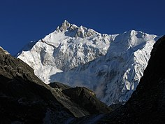

GEOGRAPHY

Situated in the Himalayan mountains, the state of Sikkim is characterised by mountainous terrain.
Almost the entire state is hilly, with an elevation ranging from 280 metres (920 ft) in the south at the border
with West Bengal to 8,586 metres (28,169 ft) in northern peaks near Nepal and Tibet.
The summit of Kangchenjunga, the world's third-highest peak, is the state's highest point,situated on the border between Sikkim and Nepal.
For the most part, the land is unfit for agriculture because of the rocky,
precipitous slopes. However, some hill slopes have been converted into terrace farms.
Sikkim is in lower center of image of the Tibetan Plateau- (NASA Satellite photo).
Numerous snow-fed streams have carved out river valleys in the west and south of the state.
These streams combine into the major Teesta River and its tributary,
the Rangeet, which flow through the state from north to south.
About a third of the state is heavily forested. The Himalayan mountains surround the northern,
eastern and western borders of Sikkim.
The Lower Himalayas, lying in the southern reaches of the state,
are the most densely populated.
Detailed 1:250k scale, 1955 US Army map of Sikkim showing major river valleys, glaciers, lakes, peaks (height in feet) and Mines.
One could see more concentration of glaciers at the north-western part of Sikkim around Kangchenjunga (28,168 ft).
The state has 28 mountain peaks, more than 80 glaciers,[59] 227 high-altitude lakes (including the Tsongmo,
Gurudongmar and Khecheopalri Lakes), five major hot springs, and more than 100 rivers and streams.
Eight mountain passes connect the state to Tibet, Bhutan and Nepal.
Sikkim's hot springs are renowned for their medicinal and therapeutic value.
Among the state's most notable hot springs are those at Phurchachu, Yumthang, Borang, Ralang, Taram-chu and Yumey Samdong.
The springs, which have a high sulphur content, are located near river banks; some are known to emit hydrogen.
The average temperature of the water in these hot springs is 50 °C (122 °F).